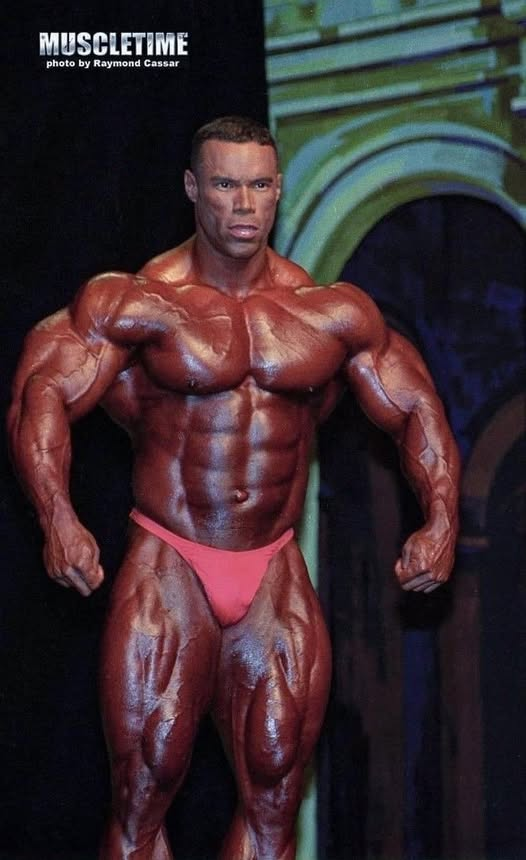

Kevin Levrone the Uncrowned king
Qui est Kevrin Levrone ?
- Nom complet : Kevin Mark Levrone
- Date de naissance : 16 juillet 1964
- Lieu de naissance : Baltimore, Maryland, États‑Unis
- Surnoms : « Maryland Muscle Machine », « The Uncrowned King » (et parfois « Kevin The Cat »)
- Taille / Morphologie : environ 1,80m (5′11″)
- Poids de compétition : autour de 240–250 lb (≈ 109–113 kg)
Orignies
- Nom complet : Kevin Mark Levrone
- Date de naissance : 16 juillet 1964
- Lieu de naissance : Baltimore, Maryland, États‑Unis
- Surnoms : « Maryland Muscle Machine », « The Uncrowned King » (et parfois « Kevin The Cat »)
Palmarès Mr. Olympia
- Année 1992 : 2ᵉ place
- Année 1993 : 5ᵉ place
- Année 1994 : 3ᵉ place
- Année 1995 : 2ᵉ place
- Année 1996 : 3ᵉ place
- Année 1997 : 4ᵉ place
- Année 1998 : 4ᵉ place
- Année 1999 : 4ᵉ place
- Année 2000 : 2ᵉ place
- Année 2001 : 3ᵉ place
- Année 2002 : 2ᵉ place
- Année 2003 : 6ᵉ place
- Année 2016 : 16ᵉ place
